Summary:
See also: Form Attributes, Database Schema, Localized Strings, Windows and Forms, Dynamic User Interface.
A Form Specification File is a source file that defines an application screen. This file defines the disposition, presentation, and behavior of screen elements called Form Items.
filename.per
To write a form specification file, you need to understand the following concepts:
A form file is described with a specific structure, based on a layout definition using containers which hold Form Items.
A form specification file is defined by a set of sections, which must appear in the order listed below.
Each form specification file can begin with a SCHEMA section identifying the database schema (if any) on which the form is based. This can be any database schema that is defined with a database schema file. Form field data types can be automatically extracted from the schema file if you specify the table and column name in the form field definition (see ATTRIBUTES section).
SCHEMA { database[@dbserver]
| string | FORMONLY }
DATABASE { database[@dbserver]
| string | FORMONLY } [ WITHOUT NULL INPUT ]
The DATABASE syntax is supported for compatibility with Informix 4gl; using SCHEMA is recommended.
The ACTION DEFAULTS section defines local action view default attributes for the form elements.
ACTION DEFAULTS
ACTION action-identifier ( action-attribute [,...] )
[...]
END
Notes:
The ACTION DEFAULTS section centralizes action view attributes (text, comment, image, accelerators) at the form level.
You give a list of ACTION elements and specify attributes for each action. The action is identified by the name following the ACTION keyword, and attributes are specified in a list between parenthesis.
The attributes defined in this section are applied to form action views like Buttons, Toolbar buttons, or Topmenu options, if the individual action views do not explicitly define their own attributes.
If an attribute is not found in the form action defaults, and has not been defined specifically for the individual action view, the runtime system searches for the attribute value in the global action defaults.
See Action Defaults and Interaction Model for more details about each attribute.
01ACTION DEFAULTS02ACTION accept ( COMMENT="Commit order record changes", CONTEXTMENU=NO )03ACTION cancel ( TEXT="Stop", IMAGE="stop", ACCELERATOR=SHIFT-F2, VALIDATE=NO )04ACTION print ( COMMENT="Print order information", ACCELERATOR=CONTROL-P, ACCELERATOR2=F5 )05ACTION zoom1 ( COMMENT="Open items list", VALIDATE=NO )06ACTION zoom2 ( COMMENT="Open customers list", VALIDATE=NO )07END
The TOPMENU section defines a pull-down menu with options that are bound to actions.
TOPMENU [menu-identifier] ( menu-attribute [,...] )
group
[...]
ENDwhere group is:
GROUP group-identifier ( group-attribute [,...] )
{ command
| group
| separator
}
[...]
END
where command is:
COMMAND command-identifier ( command-attribute [,...] )
and separator is:
SEPARATOR [separator-identifier] ( separator-attribute [,...] )
Notes:
The TOPMENU section is provided to define a pull-down menu in a form. You build a tree of GROUP elements to design the pull-down menu. A GROUP can contain COMMAND, SEPARATOR or GROUP children. A COMMAND defines a pull-down menu option that triggers an action when it is selected. In the Topmenu specification, command-identifier defines which action a menu option is bound to. For example, if you define a Topmenu option as "COMMAND zoom", it can be controlled by an "ON ACTION zoom" clause in an interactive instruction.
The Topmenu commands are enabled according to the actions defined by the current interactive instruction, which can be MENU, INPUT, INPUT ARRAY, DISPLAY ARRAY or CONSTRUCT. See also Interaction Model for more details about action management. You can use the Predefined Actions to bind Topmenu commands to common actions such as dialog validation and cancellation.
An accelerator name can be defined for a TopMenu Command; this accelerator name will be used for display in the command item. You must define he same accelerator in the Action Defaults section for the action name of the TopMenu command.
TOPMENU elements can get a style attribute in order to use a
specific rendering/decoration following Presentation
Style definitions.
See also: Topmenus.
01TOPMENU tm ( STYLE="mystyle" )02GROUP form (TEXT="Form")03COMMAND help (TEXT="Help", IMAGE="quest")04COMMAND quit (TEXT="Quit")05END06GROUP edit (TEXT="Edit")07COMMAND accept (TEXT="Validate", IMAGE="ok", TAG="acceptMenu")08COMMAND cancel (TEXT="Cancel", IMAGE="cancel")09SEPARATOR10COMMAND editcut -- Gets its decoration from action defaults11COMMAND editcopy -- Gets its decoration from action defaults12COMMAND editpaste -- Gets its decoration from action defaults13END14GROUP records (TEXT="Records")15COMMAND append (TEXT="Add", IMAGE="plus")16COMMAND delete (TEXT="Remove", IMAGE="minus")17COMMAND update (TEXT="Modify", IMAGE="accept")18SEPARATOR (TAG="lastSeparator")19COMMAND search (TEXT="Search", IMAGE="find")20END21END
The TOOLBAR section defines a toolbar with buttons that are bound to actions.
TOOLBAR [toolbar-identifier] [ ( toolbar-attribute [,...] )
]
{ ITEM item-identifier [ ( item-attribute [,...] )
]
| SEPARATOR [separator-identifier] [ (
separator-attribute [,...] )
]
}
[...]
END
The TOOLBAR section defines a toolbar in a form. A TOOLBAR section defines a set of ITEM elements that can be grouped by using a SEPARATOR element. Each ITEM defines a toolbar button associated to an action by name. The SEPARATOR keyword specifies a vertical line.
The Toolbar buttons are enabled according to the actions defined by the current interactive instruction, which can be MENU, INPUT, INPUT ARRAY, DISPLAY ARRAY or CONSTRUCT. See also Interaction Model for more details about action management. You can use the Predefined Actions to bind toolbar buttons to common actions such as dialog validation and cancellation.
The TOOLBAR supports the BUTTONTEXTHIDDEN attribute to hide the labels of buttons. Button labels are visible by default.
TOOLBAR elements can get a style attribute in order to use a
specific rendering/decoration following Presentation
Style definitions.
See also: Toolbars.
01TOOLBAR tb ( STYLE="mystyle" )02ITEM accept ( TEXT="Ok", IMAGE="ok" )03ITEM cancel ( TEXT="Cancel", IMAGE="cancel" )04SEPARATOR05ITEM editcut -- Gets its decoration from action defaults06ITEM editcopy -- Gets its decoration from action defaults07ITEM editpaste -- Gets its decoration from action defaults08SEPARATOR ( TAG="lastSeparator")09ITEM append ( TEXT="Append", IMAGE="add" )10ITEM update ( TEXT="Update", IMAGE="modify" )11ITEM delete ( TEXT="Delete", IMAGE="del" )12ITEM search ( TEXT="Search", IMAGE="find" )13END
To implement forms for dump terminals in TUI mode, you must define a SCREEN section in place of LAYOUT.
SCREEN [ SIZE lines [ BY chars
] ] [ TITLE "title" ]
{
{ text | [ item-tag [ | item-tag
] [...] ] }
[...]
}
[END]
{} curly braces are used to delimit the body of the
screen.Inside the SCREEN section, you can define the position of text labels and form fields.
Horizontal lines can be specified with a set of dash characters.
Warning: Avoid TAB characters inside the curly-brace delimited area. If used, TAB characters will be replaced by 8 blanks.
01SCREEN02{03CustId : [f001 ] Name: [f002 ]04Address : [f003 ]05[f003 ]06------------------------------------------------07}08END
The LAYOUT section defines the graphical alignment of the form by using a tree of layout containers.
LAYOUT [(attribute[=value][,...])]
root-layout-container
[END]
IMAGE, MINHEIGHT, MINWIDTH, TEXT, TAG, STYLE, VERSION, SPACING, WINDOWSTYLE.
You define the layout tree of the form by associating layout containers. Different kinds of layout containers are provided, each of them having a specific role. Some containers can hold children containers, while others can define a screen area. Containers using a screen area define a formatted region containing static text labels, item tags and layout tags. The END keyword is mandatory; it defines the end of a container block.
LAYOUT
VBOX
GRID
grid-area
END
GROUP
HBOX
GRID
grid-area
END
TABLE
table-area
END
END
END
END
END
The above definition would result in a layout tree that looks like this:
-- VBOX
|
+-- GRID 1
|
+-- GROUP
|
+-- HBOX
|
+-- GRID 2
|
+-- TABLE 1
The layout section can also contain a simple GRID container (equivalent to a V3 SCREEN definition):
LAYOUT
GRID
grid-area
END
END
The MINHEIGHT, MINWIDTH attributes can be used to specify a minimum width and height for the form. You typically use these attributes to force the form to get a bigger size as the default when it is first rendered. Note that if the front-end stores window sizes, these attributes will only be significant the first time the form is opened, or each time the VERSION attribute is changed.
The VERSION attribute can be used to specify a version for the form. This allows you to indicate that the form content has changed. Typically used to avoid having the front-end reload the saved window settings.
The IMAGE attribute can be used to define the icon of the window that will display the form. This attribute will automatically be applied to the parent window node when a form is loaded. See Windows and Forms for more details.
The TEXT attribute can be used to define the title of the window that will display the form. This attribute will automatically be applied to the parent window node when a form is loaded. See Windows and Forms for more details.
The SPACING attribute can be used to give a hint to the front-end to define the gad between form elements.
The STYLE attribute defines the decoration style for form elements, you can for example define a font property for all form elements. See Windows and Forms for more details.
With the WINDOWSTYLE attribute, you can define the window type and decoration. This attribute will automatically be applied to the parent window when a form is loaded. See Windows and Forms for more details. For backward compatibility, the STYLE attribute is used as the default WINDOWSTYLE if this attribute is not used.
01 LAYOUT ( TEXT="Customers", WINDOWSTYLE="dialog", VERSION="1.20" )Layout Containers are blocks holding other layout containers or defining a formatted screen region.
container-type [identifier] [(attribute[=value][,...])]
child-container
[...]
END
where child-container can be:
{
VBOX [identifier] [(attribute[=value][,...])]
child-container
[...]
END
|
HBOX [identifier] [(attribute[=value][,...])]
child-container
[...]
END
|
GROUP [identifier] [(attribute[=value][,...])]
child-container
[...]
END
|
FOLDER [identifier] [(attribute[=value][,...])]
PAGE [identifier] [(attribute[=value][,...])]
child-container
[...]
END
[...]
END
|
GRID [identifier] [(attribute[=value][,...])]
{
grid-area
}
END
|
SCROLLGRID [identifier] [(attribute[=value][,...])]
{
scroll-area
}
END
|
TABLE [identifier] [(attribute[=value][,...])]
{
table-area
}
END
|
TREE [identifier] [(attribute[=value][,...])]
{
tree-view-area
}
END
}
Different types of layout containers are provided, each of them having a specific usage:
| Name | Can Hold | Description |
| VBOX | VBOX, HBOX, GROUP, FOLDER, GRID, SCROLLGRID, TABLE, TREE | Packs contained elements vertically, without any decoration. |
| HBOX | VBOX, HBOX, GROUP, FOLDER, GRID, SCROLLGRID, TABLE, TREE | Packs contained elements horizontally, without any decoration. |
| GROUP | VBOX, HBOX, GROUP, FOLDER, GRID, SCROLLGRID, TABLE, TREE | Decorates the contained element with a rounded box that has a title. |
| FOLDER | PAGE | Presents contained pages in a folder tab. Can only contain PAGE children! |
| PAGE | VBOX, HBOX, GROUP, FOLDER, GRID, SCROLLGRID, TABLE, TREE | Defines a page of a FOLDER container. Can only be used in FOLDER! |
| GRID | grid-area | Unique-record presentation with positioned fields and labels. |
| SCROLLGRID | scroll-area | Multiple-record presentation with positioned fields and labels. |
| TABLE | table-area | Record-list presentation with columns and rows. |
| TREE | tree-view-area | Record-list presentation with tree-view and additional columns. |
In most cases you do not need to give a name to a container because it is only used in the form file to define the layout. However, if you want to change some attributes at runtime, you must identify the container. You can give a name to the container by writing an identifier after the container type, for example:
01 GROUP group1 (TEXT="Customer")In this example, the group name is 'group1', and it can be
used in a program to identify the element:
01DEFINE w ui.Window02DEFINE g om.DomNode03LET w = ui.Window.getCurrent()04LET g = w.findNode("Group","group1")05CALL g.setAttribute("text","This is the first group")
The HBOX container automatically packs the contained elements horizontally from left to right. Contained elements are packed in the order in which they appear in the LAYOUT section of the form file. No decoration is added when you use a HBOX container. By combining VBOX and HBOX containers, you can define any alignment you choose.
HBOX [identifier] [(attribute[=value][,...])]
layout-container
[...]
END
COMMENT, FONTPITCH, HIDDEN, STYLE, SPLITTER, TAG.
01HBOX02GROUP ( TEXT = "Customer" )03{04...05}06END07TABLE08{09...10}11END12END
The VBOX container automatically packs the contained elements vertically from top to bottom. Contained elements are packed in the order in which they appear in the LAYOUT section of the form file. No decoration is added when you use a VBOX container. By combining VBOX and HBOX containers, you can define any alignment you choose.
VBOX [identifier] [ (attribute[=value][,...])]
layout-container
[...]
END
COMMENT, FONTPITCH, HIDDEN, STYLE, SPLITTER, TAG.
01VBOX02GROUP ( TEXT = "Customer" )03{04...05}06END07TABLE08{09...10}11END12END
A GROUP container can be used to display a titled box (usually called a groupbox) around contained elements. To display a groupbox widget around a set of fields, you simply put a GROUP declaration around a GRID definition. If you want to include several children in a GROUP, you can add a VBOX or HBOX into the GROUP, to define how these elements are aligned.
GROUP [identifier] [(attribute[=value][,...])]
layout-container
[...]
END
COMMENT, FONTPITCH, STYLE, TAG, HIDDEN. TEXT.
Note that when using the GROUP container syntax, you cannot set the GRIDCHILDRENINPARENT attribute. This attribute makes sense only if the parent of the GROUP is a GRID.
01GROUP ( TEXT = "Customer" )02VBOX03GRID04{05...06}07END08TABLE09{10...11}12END13END14END
A FOLDER container can be used to display children (pages) inside a "folder tab" widget. You must define each folder page with a PAGE container inside the FOLDER container. Each PAGE container will be displayed on a separate folder page, accessed by TAB CONTROL click. If you want to include several containers in one page of a FOLDER, you can add a VBOX or an HBOX container to define how these elements are aligned.
FOLDER [identifier] [(attribute[=value][,...])]
page-definition
[...]
END
COMMENT, FONTPITCH, STYLE, TAG, HIDDEN.
In the above syntax, the page-definition defines one page of the folder. See PAGE container for more details.
A PAGE container can only be a child of a FOLDER container. A PAGE container is defined as follows:
PAGE [identifier] [(attribute[=value][,...])]
layout-container
[...]
END
ACTION, COMMENT, STYLE, TAG, HIDDEN, IMAGE, TEXT.
By default PAGE containers are used to group elements for decoration only. With the TABINDEX form field attribute, you can define which field gets the focus when a folder page is selected.
The TEXT attributes defines the label of the folder page. The IMAGE attribute can be used to specify which image to use as an icon.
If needed, you can use the ACTION attribute to bind an action to a folder page. When the page is selected, the program gets the corresponding action event.
Tips:
01FOLDER02PAGE p1 ( TEXT="Global info" )03GRID04{05...06}07END08END09PAGE p2 ( IMAGE="list" )10TABLE11{12...13}14END15END16END
The GRID container declares a formatted text block defining the dimensions and the positions of the logical elements of a screen for a unique-record presentation. With GRID, you can specify the position of labels, form fields for data entry or additional interactive objects such as buttons. You design the layout of a GRID by using static text, item tags, HBox tags, and layout tags.
GRID [identifier] [(attribute[=value][,...] )]
{
{ text
| item-tag
| hbox-tag
| layout-tag
| h-line
}
[...]
}
END
COMMENT, FONTPITCH, STYLE, TAG, HIDDEN.
A GRID container defines a layout area based on character cells. It is used to place Form Items such as labels, fields, or buttons at a specific position. Form items are located with item tags in the grid layout area. You can use layout tags to place some type of containers inside a grid.
Warning: Avoid TAB characters inside the curly-brace delimited area. If used, TAB characters will be replaced by 8 blanks.
Simple GRID example defining 3 labels and 3 fields:
01GRID02{03Id: [f1] Name: [f2 ]04Addr: [f3 ]05}06END
For more details about layout rules in grids, see Form Rendering.
The SCROLLGRID container declares a formatted text block defining the dimensions and the position of the logical elements of a screen for a multi-record presentation. This container is similar to the GRID container, except that you can repeat the screen elements on several "row-templates", in order to design a multiple-record view that appears with a vertical scrollbar.
SCROLLGRID [identifier] [(attribute[=value][,...])]
{
row-template
[...]
}
END
where row-template is a text block containing:
{ text
| item-tag
| h-line
}
[...]
COMMENT, FONTPITCH, GRIDCHILDRENINPARENT, STYLE, TAG, HIDDEN.
Same layout rules apply as in a GRID container.
Warning: Avoid TAB characters inside the curly-brace delimited area. If used, TAB characters will be replaced by 8 blanks.
01SCROLLGRID02{03Id: [f001 ] Name: [f002 ]04Addr: [f003 ]05--------------------------------------------------------06Id: [f001 ] Name: [f002 ]07Addr: [f003 ]08--------------------------------------------------------09Id: [f001 ] Name: [f002 ]10Addr: [f003 ]11--------------------------------------------------------12Id: [f001 ] Name: [f002 ]13Addr: [f003 ]14--------------------------------------------------------15}16END
The TABLE container defines the presentation of a list of records, bound to a screen record list (also called "screen array"). When using this layout container with curly braces, the position of the static labels and item tags is automatically detected by the form compiler to build a graphical object displaying a list of records. Column titles for the table list can be defined in the table layout, or as attributes in the definition of the form fields that make up the table columns.
TABLE [identifier] [(attribute[=value][,...])]
{
title [...]
[identifier [|...]
]
[...]
}
END
COMMENT, DOUBLECLICK, HIDDEN, FONTPITCH, STYLE, TAG, UNHIDABLECOLUMNS, UNMOVABLECOLUMNS, UNSIZABLECOLUMNS, UNSORTABLECOLUMNS, WANTFIXEDPAGESIZE, WIDTH, HEIGHT.
To create a table view, you must define the following elements in the form file:
The default width and height of a table are defined respectively by the columns and the number of lines used in the table layout. You can overwrite the defaults by specifying the WIDTH and HEIGHT attributes, as in the following example:
01 TABLE t1 ( WIDTH = 5 COLUMNS, HEIGHT = 10 LINES )You design the TABLE layout in curly braces. The layout can contain column titles
as well as the tag identifiers for each column's
form fields. The form compiler can associate column
titles in the table layout with the form field columns if they are aligned properly
- the first character of each column title must appear at the same text column
position as the first character of the tag identifier for the form field. In the following
example, Title1 and Title2 will be associated with
column1 and column2, but Title3 cannot
be identified as a column title:
01TABLE02{03Title1 Title2 Title304[column1 |column2 |column3 ]05[column1 |column2 |column3 ]06[column1 |column2 |column3 ]07}08END
Warning: Avoid TAB characters inside the curly-brace delimited area. If used, TAB characters will be replaced by 8 blanks.
The height of table columns can be defined by adding empty tags below column tags (this makes sense only when using widgets that can get a height such as TEXTEDIT or IMAGE):
01TABLE02{03Title1 Title2 Title304[column1 |column2 |column3 ]05[ | | ]06[column1 |column2 |column3 ]07[ | | ]08[column1 |column2 |column3 ]09[ | | ]10}11END
The column data type and additional properties are defined in the ATTRIBUTES section, as form fields:
01ATTRIBUTES02EDIT column1 = customer.cust_num;03EDIT column2= customer.cust_name,04EDIT column3= customer.cust_cdate;
As an alternative, you can set the column titles of a table container by using the TITLE attribute in the definition of the form fields, instead of using column header text in the table layout. This allows you to use Localized Strings for the column titles:
01TABLE02{03[c1 |c2 |c3 ]04[c1 |c2 |c3 ]05[c1 |c2 |c3 ]06}07END08...09ATTRIBUTES10EDIT c1 = FORMONLY.col1, TITLE=%"Num";11LABEL c2 = FORMONLY.col2, TITLE=%"Name";12CHECKBOX c3 = FORMONLY.col3, TITLE=%"Status", VALUECHECKED="Y", VALUEUNCHECKED="N";;13...
Each form field of the table must be grouped in the INSTRUCTIONS section in a screen record definition:
01 SCREEN RECORD listarr( col1, col2, col3 )The screen record identifies the record list in BDL programs when you use an INPUT ARRAY or DISPLAY ARRAY instruction:
01 INPUT ARRAY custarr FROM listarr.*Warning: The screen record definition must have exactly the same columns as the TABLE container. However, the order of the screen record fields can be different from the column order, to match the program array elements, for example when the database table defines the columns (DEFINE LIKE) in a different order as the form table.
By default, the current row in a TABLE is highlighted in display mode (DISPLAY ARRAY), but it is not highlighted in input mode (INPUT ARRAY, CONSTRUCT). You can set decoration attributes of a table with a style; see style attributes of the Table class.
With the DOUBLECLICK attribute, you can define a particular action to be sent when the user double-clicks on a row.
After a dialog execution, the current row may be unselected, depending on the KEEP CURRENT ROW dialog attribute.
Some front-ends support different presentation options which can be controlled by a style attribute. You can for example hide the column headers or define the highlight color for selected rows.
01SCHEMA videolab02LAYOUT ( TEXT="Customer list" )03TABLE ( TAG="normal" )04{05Num Customer name Date S06[c1 |c2 |c3 |c4 ]07[c1 |c2 |c3 |c4 ]08[c1 |c2 |c3 |c4 ]09[c1 |c2 |c3 |c4 ]10[c1 |c2 |c3 |c4 ]11[c1 |c2 |c3 |c4 ]12}13END14END15TABLES16customer17END18ATTRIBUTES19EDIT c1 = customer.cust_num;20EDIT c2 = customer.cust_name;21EDIT c3 = customer.cust_cdate;22CHECKBOX c4 = customer.cust_status;23END24INSTRUCTIONS25SCREEN RECORD custlist( cust_num, cust_name, cust_cdate, cust_status )26END
The TREE container defines the presentation of a list of ordered records in a tree-view widget.
TREE [identifier] [(attribute[=value][,...])]
{
title [...]
[name_column [|identifier [|...]
] ]
[...]
}
END
COMMENT, DOUBLECLICK, HIDDEN, FONTPITCH, STYLE, TAG, UNHIDABLECOLUMNS, UNMOVABLECOLUMNS, UNSIZABLECOLUMNS, UNSORTABLECOLUMNS, WANTFIXEDPAGESIZE, WIDTH, HEIGHT, PARENTIDCOLUMN, IDCOLUMN, EXPANDEDCOLUMN, ISNODECOLUMN, IMAGEEXPANDED, IMAGECOLLAPSED, IMAGELEAF.
To create a tree view, you must define the following elements in the form file:
Tree view definitions are very similar to regular table containers; before reading further about tree views, you should be familiar with TABLE containers.
See the Tree View page for more details about tree-view programming in Genero.
A Form Item defines a form element. For example, a Form Item can be an input area (such as an EDIT field), a push BUTTON, or a layout element (such as a GROUPBOX). The position and length of a Form Item is defined by a place holder called 'tag' (Item Tag, HBox Tag or Layout Tag). Such place holders are used in the body of GRID, SCROLLGRID and TABLE containers. The appearance and the behavior of a Form Item is defined in the ATTRIBUTES section. Form Items defined for data management are called Form Fields.
Form Items can be identified with a unique name. Form Fields have to be identified with the tabname.colname specification after the equal sign, while other (non-field) form items like static labels and groupboxes can get an optional item name, and identifier to be specified after the colon sign. The tabname.colname or the item name will be copied to the name attribute of the corresponding node in the .42f file. This identifier can then be used in programs to find a specific form element in the form, for example to hide a complete groupbox with ui.Form.setElementHidden("name", 1).
01SCHEMA carstore02LAYOUT( TEXT = "Vehicles" )03GRID04{05<G g1 >06Number: [f1 ]07Name: [f2 ]08[b1 ]0910}11END12END13TABLES14vehicle15END16ATTRIBUTES17GROUP g1 : group1, TEXT="Identification" ;18EDIT f1 = vehicle.num;19EDIT f2 = vehicle.name;20BUTTON b1 : validate, TEXT="Ok";21END
A Form Field is a Form Item dedicated to data management. It associates a Form Item with a screen record field. A Form Field defines an area where the user can view and edit data, depending on its description in the form specification file and the interactive statements in the program. The interactive instruction in your program must mediate between screen record fields and database columns by using program variables.
Unless a form field is FORMONLY, its field description must specify the SQL identifier of a database column as the name of the display field. Fields are associated with database columns only during the compilation of the form specification file. During the compilation process, the form compiler examines the database schema file to identify the data type of the column, and two optional files, containing the definitions of the syscolval and syscolatt tables, for default values of the attributes that you have associated with any columns of the database.
item-type item-tag = [table.]column
[ , attribute-list ] ;
After the form compiler extracts any default attributes and identifies data types from the schema file, the association between fields and database columns is broken, and the form cannot distinguish the name or synonym of a table or view from the name of a screen record.
01 EDIT f001 = customer.fname, NOT NULL, REQUIRED, COMMENTS="Customer name" ;The programs only have access to screen
record fields, in order to display or input data using program variables.
Regardless of how you define them, there is no implicit relationship between
the values of program variables, form fields, and database columns. Even, for
example, if you declare a variable lname LIKE customer.lname, the
changes that you make to the variable do not imply any change in the column
value. Functional relationships among these entities must be specified in the
logic of your program, through screen interaction statements, and
through SQL statements. It is up to the programmer to determine what data a form displays and
what to do with data values that the user enters into the fields of a form. You
must indicate the binding explicitly in any statement that connects
variables to forms or to database columns.
Warning: If a form field is declared with a table column using the SERIAL, SERIAL8 or BIGSERIAL SQL type, the field will automatically get the NOENTRY attribute.
FORMONLY form fields are not associated with columns of any database table or view. They can be used to enter or display the values of program variables. If the SCHEMA section specifies FORMONLY, this is the only kind of Form Item description that you can specify in the ATTRIBUTES section.
item-type item-tag = FORMONLY.field [ TYPE { LIKE [table.]column
| datatype [NOT NULL] } ]
[ , attribute-list ] ;
The optional data type specification uses a restricted subset of the data type declaration syntax that the DEFINE statement supports. When using CHAR or VARCHAR data types, you do not have to specify the length, because it is defined by the size of the field tag in the LAYOUT section. Additionally, the STRING data type is not supported.
The NOT NULL keywords specify that if you reference the form field in an INPUT statement, the user must enter a non-null value in the field. This option is more restrictive than the REQUIRED attribute, which permits the user to enter a NULL value.
01 EDIT f001 = FORMONLY.total TYPE DECIMAL(10,2), NOENTRY ;The input length of a form field is the number of characters the user can type into the text editor. The input length is defined by the data type of the program variable used by the dialog and the width of the item tag. The width of the item tag is defined by the number of ASCII characters used between the square braces.
01 [f01 ] -- width = 4When the program variable is defined with a DATE data type, the input length is the maximum of:
When the program variable is defined with a character or numeric data type, the input length is defined by the width of the form field. This means, the maximum number of characters a user can input is defined by the size of the item-tag in the form.
For character data types, you can specify the SCROLL attribute to force the input length to be as large as the program variable. For example, when using a CHAR(20) variable with a form field defined with an item-tag large as 3 characters, the input length will be 20 characters instead of 3.
Warning: In a multi-byte character set, the input length represents the number of bytes in the locale of the application. In other words, it is the number of bytes used by the character string in the character set used by the runtime system. For example, when using a Chinese BIG5 encoding, a field having a width of 6 ASCII characters in the form file, represents a maximum input length of 6 bytes. In BIG5, Latin characters (a,b,c) use one byte each, while Chinese characters use 2 bytes. So, if the input length is 6, the user can enter 6 Latin characters like "abcdef", or 4 Latin characters and one Chinese, or 3 Chinese characters.
Remark: When you display a program variable to a form field with the DISPLAY TO or DISPLAY BY NAME instruction, the input length is used to truncate the text resulting from the data conversion. If the resulting text does not fit into the input length, the runtime system displays star characters (asterisks) in the form field, to indicate a size overflow.
PHANTOM fields define screen-record or screen-array fields which are not used in the LAYOUT section.
PHANTOM { [table.]column
| FORMONLY.fieldname
} ;
A PHANTOM field defines a form field listed in a screen-record or screen-array, but does not have to be displayed in one of the containers of the LAYOUT section. The phantom fields can be used by dialog instructions of programs but are never displayed in the form.
For example, if you want to implement a screen-array with all the columns of a database table defined in the schema file, but you don't want to display all the columns in the TABLE container of the LAYOUT section, you must use PHANTOM fields. With the screen-array matching the database table, you can easily write program code to fetch all columns into an array defined with a LIKE clause.
Note that PHANTOM field data is never send to the front-ends. Therefore, you can use a phantom field to store critical data that must not go out of the application server.
01SCHEMA carstore02LAYOUT( TEXT = "Vehicles" )03GRID04{05<T t1 >06Num Name Price07[c1 |c2 |c3 ]08[c1 |c2 |c3 ]09[c1 |c2 |c3 ]10}11END12END13TABLES14vehicle15END16ATTRIBUTES17TABLE t1 : table1;18EDIT c1 = vehicle.num;19EDIT c2 = vehicle.name;20EDIT c3 = vehicle.price;21PHANTOM vehicle.available; -- not used in layout22END23INSTRUCTIONS24SCREEN RECORD sr(vehicle.*);25END
An Item Tag defines the position and size of a Form Item in a grid-area of a GRID or SCROLLGRID.
[identifier [-] [|...]
]
An item tag is delimited by square braces ([]) and contains an identifier used to reference the description of the Form Item in the ATTRIBUTES section.
Each item tag must be indicated by left and right delimiters to show the length of the item and its position within the container layout. Both delimiters must appear on the same line. You must use left and right braces ([]) to delimit item tags. The number of characters and the delimiters define the width of the region to be used by the item:
01GRID02{03Name: [f001 ]04}05END
The Form Item position starts after the open square brace and the length is defined by the number of characters between the square braces. The following example defines a Form Item starting at position 3, with a length of 2:
01GRID02{03123456789004[f1]05}06END
By default, the real width of the Form Item is defined by the number of characters used between the tag delimiters. For some special items like BUTTONEDIT, COMBOBOX and DATEEDIT, the width of the field is adjusted to include the button. The form compiler computes the width as: width=nbchars-2 if nbchars>2:
01GRID02{03123456704[f1 ] -- this EDIT gets a width of 705[f2 ] -- this BUTTONEDIT gets a width of 5 (7-2)06}07END
If the default width generated by the form compiler does not fit, the - dash symbol can be used to define the real width of the item. In the following example, the Form Item occupies 7 grid cells, but gets a real width of 5 (i.e. for an EDIT field, you would be able to enter 5 characters):
01GRID02{03123456704[f1 - ]05}06END
To make two items appear directly next to each other, you can use the pipe symbol (|) to indicate the end of the first item and the beginning of the second item:
01GRID02{03Info: [f001 |f002 |f003 ]04}05END
If you need the form to support items with a specific height (more that one line), you can specify multiple-segment item tags that occupy several lines of a grid-area. To create a multiple-segment item, repeat the item tag delimiters without the item identifier on successive lines:
01GRID02{03Multi-segment: [f001 ]04[ ]05[ ]06[ ]07[ ]08}09END
If the same item tag (i.e. using the same identifier) appears more than once in the layout, it defines a column of a screen array:
01GRID02{03Single-line array:04[f001 ] [f002 ] [f003 ]05[f001 ] [f002 ] [f003 ]06[f001 ] [f002 ] [f003 ]07[f001 ] [f002 ] [f003 ]08}09END
You can even define a multi-line list of fields:
01GRID02{03Multi-line array:04[f001 ] [f002 ]05[f003 ]06[f001 ] [f002 ]07[f003 ]08[f001 ] [f002 ]09[f003 ]10[f001 ] [f002 ]11[f003 ]12}13END
An HBox Tag defines the position and size in a GRID of an horizontal box containing several Form Items.
[ element : [...] ]
where element can be:
{ identifier [-] | string-literal | spacer
}
HBox Tags are provided to control the alignment of Form Items in a grid. HBox tags allow you to stack Form Items horizontally without the elements being influenced by elements above or below. In an HBox, you can mix Form Items, static labels and spacers. A typical use of the HBox is to have zip-code/city form fields side by side with predictable spacing in-between.
An HBox tag is delimited by square braces ([]) and must contain at least one string-list or an identifier preceded or followed by a colon (:). A string-list is combination of string-literals (quoted text) and spacers (blank characters). The colon is a delimiter for HBox tag elements, which are included in the horizontal box.
The following example shows simple HBox tags:
01GRID02{03["Label:": ]04[f001 : ]05[ :f002 ]06}07END
In this example:
An HBox tag defines the position and width (in grid cells) of several Form Items grouped inside an horizontal box. The position and width (in grid cells) of the horizontal box is defined by the square braces ([]) delimiting the HBox tag.
When using an identifier, you define the position of a Form Item which is described in the ATTRIBUTES section. When using a string-list, you can define static labels and/or spacers. The following example defines an HBox tag generating 7 items (a static label, a spacer, a Form Item, a spacer, a static label, a spacer and a Form Item):
01GRID02{03["Num:" :num : :"Name:" :name ]04}05END
A spacer is an invisible element that automatically expands. It can be used to align elements left, right or center in the HBox. The following example defines 3 HBoxes with the same width. Each HBox contains one field. The first field is aligned to the left, the second is aligned to the right and third is centered:
01GRID02{03[left : ]04[ :right ]05[ :centered: ]06}07END0809ATTRIBUTES10LABEL left : label1, TEXT="LEFT";11LABEL right : label2, TEXT="RIGHT";12LABEL centered : label3, TEXT="CENTER";13END
When you use string literals, the quotes define where the label starts and stops. If there is free space after the quote that ends the label, then it is filled by a spacer. Consider the following example:
In this example:01GRID02{03[ :"Label1" ]04[ :"Label2"]05}06END
03 contains a spacer, followed by the static label, followed by
another spacer. The quotation marks end the string literal; a colon is not
required to delimit the label from the final spacer.04 contains a spacer, followed by the static label. Because there
is no empty space between the end of the static label and the closing
bracket of the HBox Tag ( ] ).A typical use of HBox tags is to vertically align some Form Items - that must appear on the same line - with one or more Form Items that appear on the other lines:
01GRID02{03Id: [num :"Name: ":name ]04Address: [street : ]05[zipcode:city ]06Phones: [phone :fax ]07}08END
In the above example, the form compiler will generate a grid containing 7 elements (3 Labels and 4 HBoxes):
Inside an HBox tag, the positions and widths of elements are independent of other HBoxes. It is not possible to align elements over HBoxes. The position of items inside an HBox depends on the spacer and the real size of the elements. The following example does not align the items as you would expect, following the character positions in the layout definition:
01GRID02{03["Num: " :fnum : ]04["Name: " :fname ]05}06END
A big advantage in using elements in an HBox is that the fields gets their real sizes according to the .per definition. The following example illustrates the case:
01GRID02{03MMMMM04[f1 ]05[f2 : ]06}07END
Here all items will occupy the same number of grid columns (5). The MMMMM static label will have the largest width and define the width of the 5 grid cells. The first field is defined with a normal item tag, and expands to the width of the 5 grid cells. The line 5 defines an HBox that will expand to the size of the 5 grid cells, according to the static label, but its child element - the field f2 - gets a size corresponding to the number of characters used before the ':' colon (i.e. 3 characters).
If the default width generated by the form compiler does not fit, the - dash symbol can be used to define the real width of the item. In the following example, the HBox tag occupies 20 grid cells, the first Form Item gets a width of 5, and the second Form Item gets a width of 3:
01GRID02{031234567890123456789004[f1 - :f2 - : ]05}06END
The - dash size indicator is especially useful in BUTTONEDIT, DATEEDIT and COMBOBOX form fields, for which the default width computed by the form compiler may not fit. See BUTTONEDIT for example.
In the following example, a static label is positioned above a TEXTEDIT field. The label will be centered over the TEXTEDIT field, and will remain centered as the field expands or contracts with the resizing of the window.
01GRID02{03[ :"label": ]04[textedit ]05}06END0708ATTRIBUTES09TEXTEDIT textedit = formonly.textedit, STRETCH=BOTH;10END
Layout Tags can be used to define layout containers inside the frame of a grid-based container.
<type [identifier] >
content
<
>
or
<type [identifier] >
content
While complex layout with nested frames can be defined with HBOX and VBOX containers, it is also possible to define a form with a complex layout by using layout tags within a grid.
A layout tag defines a layout region in a frame of a grid-based container (such as the GRID or SCROLLGRID containers).
A layout tag has a type that defines what kind of container will be generated in the compiled form. The following table shows the different type of layout tags:
| Tag Type | Abbr. | Description |
| GROUP | G | Defines a group box layout tag, resulting in the same presentation as the GROUP container. |
| TABLE | T | Defines a list view layout tag, resulting in the same presentation as the TABLE container. |
| TREE | N/A | Defines a tree-view list view layout tag, resulting in the same presentation as the TREE container. |
| SCROLLGRID | S | Defines a scrollable grid layout tag, resulting in the same presentation as the SCROLLGRID container. |
In the ATTRIBUTE section, you can specify attributes for the element corresponding to the layout tag. In the following example, the layout tag g1 is defined in the ATTRIBUTE section with the GROUP Form Item type to set the name and text:
01LAYOUT02GRID03{04<GROUP g1 >05[text1 ]06[ ]07[ ]08< >09}10END11END12ATTRIBUTES13GROUP g1:group1, TEXT="Description";14TEXTEDIT text1=FORMONLY.text1;15END
The layout region is a rectangle, in which the width is defined by the length of the layout tag, and the height by a closing tag (< >) .
In the following example, the layout region defined by the layout tag named "group1" is shown in yellow:
01<GROUP group1 >020304< >
Form Items must be placed inside the layout region, shown in light blue here. Note that the [ ] square brackets are not part of the form item width and can be place at the same X position as the layout tag delimiters:
01<GROUP group1 >02Item: [f001 ]03Quantity: [f002 ]04Date: [f003 ]05< >
Note that the [ ] square brace delimiters are not counted to define the width of an item tag. The width of the item is defined by the number of character between the square braces. Thus, the following layout is valid and can be compiled:
01<GROUP group1 >02[f001 ]03[f002 ]04Static labels must fit!!05< >06<TABLE table1 >07[colA |colB ]08[colA |colB ]09[colA |colB ]10[colA |colB ]
You can place several layout tags on the same layout line in order to split the frame horizontally. The following example defines six layout regions (four group boxes and two tables):
01<GROUP group1 ><GROUP group2 ><GROUP group4 >02FName: [f001 ] Phone: [f004 ][f012 ]03LName: [f002 ] EMail: [f005 ][ ]04< >< >[ ]05<GROUP group3 >[ ]06[f010 ][ ]07< >< >08<TABLE table1 ><TABLE table2 >09[c11 |c12 |c13 ][c21 |c22 ]10[c11 |c12 |c13 ][c21 |c22 ]11[c11 |c12 |c13 ][c21 |c22 ]12[c11 |c12 |c13 ][c21 |c22 ]13< >< >
The < > closing layout tag is optional. When not specified, the end of the layout region is defined by the underlying layout tag or by the end of the current grid. However, the ending tag must be specified if the form compiler cannot detect the end of the layout region. This is usually the case with group layout tags. In the next example, the table does not need an ending layout tag because it is defined by the starting tag of the group, but the group needs and ending tag otherwise it would include the last field (field3). Additionally, if field3 would have a different size, the form compiler would raise an error because the group and the last field geometry would conflict.
01<TABLE table1 >02[colA |colB ]03[colA |colB ]04[colA |colB ]05[colA |colB ]06[colA |colB ]07[colA |colB ]08<GROUP group2 >09[field1 ]10[field2 ]11< >10[field3 ]
It is possible to mix container layout tags with singular form items. You typically put form items using a large area of the form, such as IMAGEs, TEXTEDITs. Note that the [ ] square brace delimiters are not used to compute the size of the singular form items:
01<GROUP group1 >[image1 ]02FName: [f001 ][ ]03LName: [f002 ][ ]04< >[ ]05[textedit1 | ]06[ | ]07[ | ]
Table layout tags can be embedded inside group layout tags:
01<GROUP group1 >02<TABLE table1 >03[colA |colB ]04[colA |colB ]05[colA |colB ]06[colA |colB ]07< >
HBox or VBox containers with splitter are automatically created by the form compiler in the following conditions:
Stretchable elements are containers such as TABLEs, or form items like IMAGEs, TEXTEDITs with STRETCH attribute.
Warning: No HBox or VBox will be created if the elements are in a SCROLLGRID container.
The example below defines two tables stacked vertically, generating a VBox with splitter (note that ending tags are omitted):
01<TABLE table1 >02[colA |colB ]03[colA |colB ]04[colA |colB ]05[colA |colB ]06<TABLE table2 >07[colC |colD ]08[colC |colD ]
Below the layout defines two stretchable TEXTEDITs placed side by side which would generate an automatic HBox with splitter. Note that to make both textedits touch you need to use a pipe delimiter in between:
01[textedit1 |textedit2 ]02[ | ]03[ | ]04[ | ]
The next layout example would make the form compiler create an automatic VBox with splitter to hold table2 and textedit1, plus an HBox with splitter to hold table1 and the first VBox (note that we must use a pipe character to delimit the end of colB and textedit1 so that both tables can be placed side by side):
01<TABLE table1 ><TABLE table2 >02[colA |colB ][colC|colD ]03[colA |colB ][colC|colD ]04[colA |colB ][colC|colD ]05[colA |colB |textedit1 ]06[colA |colB | ]07[colA |colB | ]
If you want to avoid automatic HBox or VBox with splitter creation, you must add blanks between elements:
01<TABLE table1 > <TABLE table2 >02[colA |colB ] [colC|colD ]03[colA |colB ] [colC|colD ]04[colA |colB ] [colC|colD ]05[colA |colB ]06[colA |colB ] [textedit1 ]07[colA |colB ] [ ]08[colA |colB ] [ ]
The typical Ok/Cancel window:
01LAYOUT02GRID03{04<GROUP g1 >05[com ]06< >07[ :bok |bno ]08}09END10END11ATTRIBUTES12LABEL com: comment;13BUTTON bok: accept;14BUTTON bno: cancel;15...
The following example shows multiple uses of layout tags:
01LAYOUT02GRID03{04<SCROLLGRID scrollgrid1 ><GROUP g1 >05Ident: [f001 ] [f002 ] [text1 ]06[f003 ] [ ]07Ident: [f001 ] [f002 ] [ ]08[f003 ] [ ]09Ident: [f001 ] [f002 ] [ ]10[f003 ] [ ]11< >< >12<GROUP g2 >13[text2 ]14[ ]15[ ]16< >17<TABLE t1 >18Num Name State Value19[col1 |col2 |col3 |col4 ]20[col1 |col2 |col3 |col4 ]21[col1 |col2 |col3 |col4 ]22[col1 |col2 |col3 |col4 ]23< >24}25END26END27ATTRIBUTES28GROUP g1:group1, TEXT="Comment";29GROUP g2: TEXT="Description";30TABLE t1:table1, UNSORTABLECOLUMNS;31...
01LAYOUT ( TEXT = "Customer orders" )02VBOX03GROUP group1 ( TEXT = "Customer" )04GRID05{06<GROUP Name >07[f001 ]08< >09<GROUP Identifiers ><GROUP Contact >10FCode: [f002 ] Phone: [f004 ]11LNumb: [f003 ] EMail: [f005 ]12< >< >13}14END15END16TABLE17{18OrdNo Date Ship date Weight19[c01 |c02 |c03 |c04 ]20[c01 |c02 |c03 |c04 ]21[c01 |c02 |c03 |c04 ]22[c01 |c02 |c03 |c04 ]23}24END25FOLDER26PAGE pg1 ( TEXT = "Address" )27GRID28{29Address: [f011 ]30State: [f012 ]31Zip Code: [f013 ]32}33END34END35PAGE pg2 ( TEXT = "Comments" )36GRID37{38[f021 ]39[ ]40[ ]41[ ]42}43END44END45END46END47END
The TABLES section lists every table or view referenced elsewhere in the form specification file (specifically the ATTRIBUTES section).
TABLES
[ alias =
[database[@dbserver]:][owner.]
] table [,...]
[END]
This section is mandatory when form fields reference database columns defined in the schema file. The TABLES section must follow the LAYOUT section, and the SCHEMA section must also exist to define the database schema. The END keyword is optional.
Field identifiers in programs or in other sections of the form specification file can reference screen fields as column, alias.column, or table.column.
The same alias must also appear in screen interaction statements of programs that reference screen fields linked to the columns of a table that has an alias.
If a table requires the name of an owner or of a database as a qualifier, the TABLES section must also declare an alias for the table. The alias can be the same identifier as table.01SCHEMA stores02LAYOUT03{04...05}06END07TABLES08customer,09orders10END11...
The ATTRIBUTES section describes properties of the elements used in the form.
ATTRIBUTES
{ form-field-definition | phantom-field-definition | form-item-definition }
[...]
[END]
where form-field-definition is:
item-type item-tag = field-name
[ , attribute-list ]
;
where phantom-field-definition is:
PHANTOM field-name
;
where form-item-definition is:
item-type item-tag : item-name [ , attribute-list ]
;
A Form Item definition is associated by name to an Item Tag or Layout Tag defined in the LAYOUT section.
In order to define a Form Field, the Form Item definition must use the equal sign notation to associate a screen record field with the Form Item. If the Form Item is not associated with a screen record field (for example, a push button), you must use the colon notation.
Form item definitions can optionally include an attribute-list to specify the appearance and behavior of the item. For example, you can define acceptable input values, on-screen comments, and default values for fields.
When no screen record is defined in the INSTRUCTION section, a default screen record is built for each set of Form Items declared with the same table name.The order in which you list the Form Items determines the order of fields in the default screen records that the form compiler creates for each table.
The item-type defines the kind of Form Item, to indicate which graphical object must be used to display the form element. The following table describes the supported Form Item types:
| Form Item Type | Description |
| BUTTON | Standard push button with a label or a picture. |
| BUTTONEDIT | Line edit box with a button on the right side. |
| CANVAS | Area reserved for drawing. |
| CHECKBOX | Boolean entry with a box and a text label. |
| COMBOBOX | Field with a button that opens a list of values. |
| DATEEDIT | Line edit box with a button that opens a calendar window. |
| EDIT | Simple line edit box for data input or display. |
| FIELD | Abstract form field that can be defined in schema files. |
| GROUP | Group container specified with a layout tag. |
| IMAGE | Area where a picture file can be displayed. |
| LABEL | Simple read-only text widget. |
| PROGRESSBAR | Progress bar widget to display an integer value. |
| RADIOGROUP | Field presented with a set of radio buttons. |
| SCROLLGRID | Scrollable grid container specified with a layout tag. |
| SLIDER | Slider widget to enter an integer value within a defined range. |
| SPINEDIT | Text editor to enter an integer value. |
| TABLE | Table container specified with a layout tag. |
| TEXTEDIT | Multi-line edit box for data input or display. |
| TIMEEDIT | Text editor to enter time values. |
| TREE | Tree container specified with a layout tag. |
| WEBCOMPONENT | Defines a Web Component field implemented with an external widget. |
01ATTRIBUTES02EDIT f001 = player.name, REQUIRED, COMMENT="Enter player's name";03EDIT f002 = player.ident, NOENTRY;04COMBOBOX f003 = player.level, NOT NULL, ITEMS=((1,"Beginner"),(2,"Normal"),(3,"Expert"));05CHECKBOX f004 = FORMONLY.winner, VALUECHECKED=1, VALUEUNCHECKED=0, TEXT="Winner";06BUTTON b1 : print, TEXT="Print Report";07GROUP g1 : print, TEXT="Description";08END
The field-name as used in the ATTRIBUTES syntax, associates the Form Item to a screen record field to define a Form Field.
A field definition can reference a database column defined in the database schema files:
[table.]column
or, it can be defined as a FORMONLY field. The data type of the field is defined with an indirect reference to a database column or with an explicit data type:
FORMONLY.field [ TYPE { LIKE [table.]column
| datatype [NOT NULL] } ]
01ATTRIBUTES02EDIT f001 = player.name, REQUIRED, COMMENT="Enter player's name";03END
The attribute-list as used in the ATTRIBUTES syntax describes how the runtime system should display and handle a Form Item.
attribute [ = { value | value-list
} ] [,...]
where value-list is:
( { value | value-list } [,...]
)
The attribute list can by used, for example, to supply a default value, limit the values that can be entered, or set the text and color of the Form Item.
The FIELD item type defines a generic form field that can be defined in database schema files.
FIELD item-tag = field-name [ , attribute-list ]
;
COMMENT, DEFAULT, FONTPITCH, HIDDEN, NOT NULL, NOENTRY, REQUIRED, SAMPLE, STYLE, SIZEPOLICY, TAG, TABINDEX.
Table Column only: UNSORTABLE, UNSIZABLE, UNHIDABLE, UNMOVABLE, TITLE.
01 FIELD f001 = order.state, REQUIRED, STYLE="important";This item type defines a generic form field for data input or display. The real item type (i.e. the widget) and the attributes must be defined in the database schema files.
The definition of the form field is determined by the .val database schema file, based on the field-name (table.column). The item type (EDIT, COMBOBOX, etc) is defined by the ITEMTYPE attribute in the .val schema file.
By using this form field specification, you can centralize the definition of form fields in the database schema file, to enforce reusability. You can, for example, specify that the "order.state" database column is a COMBOBOX, with a list of ITEMS, as if the field was defined directly in the .per form specification file.
It is also possible to use the attributes defined in the database schema files with other Form Item types.
The attributes defined directly in the form specification file take precedence over the attributes defined in the database schema files.
The database schema files can be edited manually or by using a tool.
See also Form Field, Database Schema.
The EDIT item type defines a simple line-edit field.
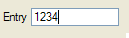
EDIT item-tag = field-name [ , attribute-list ]
;
AUTONEXT, CENTURY, COLOR, COLOR WHERE, COMMENT, DEFAULT, DISPLAY LIKE, DOWNSHIFT, HIDDEN, FONTPITCH, FORMAT, IMAGECOLUMN, INCLUDE, INVISIBLE, JUSTIFY, KEY, NOT NULL, NOENTRY, PICTURE, PROGRAM, REQUIRED, REVERSE, SAMPLE, STYLE, SCROLL, SIZEPOLICY, TAG, TABINDEX, UPSHIFT, VALIDATE LIKE, VERIFY.
Table Column only: UNSORTABLE, UNSIZABLE, UNHIDABLE, UNMOVABLE, TITLE.
01 EDIT f001 = customer.state, REQUIRED, INCLUDE=(0,1,2);Defines a simple line edit box for data input or display.
See also Form Field.
The BUTTONEDIT item type defines a line-edit with a push-button that can trigger an action.
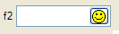
BUTTONEDIT item-tag = field-name [ , attribute-list ] ;
ACTION, AUTONEXT, CENTURY, COLOR, COLOR WHERE, COMMENT, DEFAULT, DISPLAY LIKE, DOWNSHIFT, FONTPITCH, HIDDEN, FORMAT, IMAGE, INCLUDE, INVISIBLE, JUSTIFY, KEY, NOT NULL, NOENTRY, PICTURE, PROGRAM, REVERSE, SAMPLE, SCROLL, SIZEPOLICY, STYLE, REQUIRED, TAG, TABINDEX, UPSHIFT, VALIDATE LIKE, VERIFY.
Table Column only: UNSORTABLE, UNSIZABLE, UNHIDABLE, UNMOVABLE, TITLE.
01 BUTTONEDIT f001 = customer.state, REQUIRED, IMAGE="smiley", ACTION=zoom;The BUTTONEDIT Form Item defines a line edit box with a button on the right side.
This kind of Form Item is typically used to open a new window for data selection.
The ACTION attribute defines the name of the action to be sent to the program when the user clicks on the button. The IMAGE attribute defines the picture to be displayed in the button.
When you use an HBox tag combined to the SAMPLE attribute, it is possible to specify the exact with of a BUTTONEDIT.
By default, the real width of BUTTONEDIT, DATEEDIT and COMBOBOX is computed as follows (nbchars represents the number of characters used in the form layout by the item tag to define the width of the item):
If nbchars is greater as 2, width = nbchars - 2; otherwise, width = nbchars.
For example:
01LAYOUT02GRID03{04ButtonEdit A [ba ]05ButtonEdit B [bb: ]06ButtonEdit C [bc : ]07ButtonEdit D [bd -: ]08}09END10END11ATTRIBUTES12BUTTONEDIT ba = FORMONLY.ba, SAMPLE="0", ACTION=zoom1;13BUTTONEDIT bb = FORMONLY.bb, SAMPLE="M", ACTION=zoom2;14BUTTONEDIT bc = FORMONLY.bc, SAMPLE="Pi", ACTION=zoom3;15BUTTONEDIT bd = FORMONLY.bd, SAMPLE="0", ACTION=zoom4;16END
Here the BUTTONEDIT ba occupies 7 grid columns and gets a real width of 5 (7-2). The SAMPLE attribute makes the edit field part as large as 5 characters '0' in the current font, so with this field you can input or display only 5 digits.
The BUTTONEDIT bb, which is in an HBox tag that occupies 7 grid columns, gets a width of 2. Since the SAMPLE attribute is "M", one can input 2 characters as wide as an "M".
The BUTTONEDIT bc, which is in an HBox tag that occupies 7 grid columns, gets a width of 3 (5-2). Since the SAMPLE attribute is "Pi", the edit field part will be as large as the word "Pi". (If SAMPLE contains more than 1 character it must have the same number of characters as in the field definition).
When using an HBox tag, one can explicitly specify the width of the field with the dash size indicator: The BUTTONEDIT bd, which is in an HBox tag that occupies 7 grid columns, gets a width of 4 (because of the dash size indicator). Since the SAMPLE attribute is "0", the edit field part will be as large as 4 digits.
See also Form Field.
The TEXTEDIT item type defines a multi line-edit field.
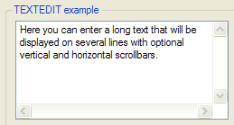
TEXTEDIT item-tag = field-name [ , attribute-list ]
;
COLOR, COLOR WHERE, COMMENT, DEFAULT, DOWNSHIFT, FONTPITCH, HIDDEN, INCLUDE, JUSTIFY, KEY, NOT NULL, NOENTRY, PROGRAM, REQUIRED, SAMPLE, SCROLLBARS, SIZEPOLICY, STYLE, STRETCH, TAG, TABINDEX, UPSHIFT, VALIDATE LIKE, WANTTABS, WANTNORETURNS.
Table Column only: UNSORTABLE, UNSIZABLE, UNHIDABLE, UNMOVABLE, TITLE.
01 TEXTEDIT f001 = customer.address, WANTTABS, SCROLLBARS=BOTH;This kind of form field allows the user to enter a long text on multiple lines.
By default, when the focus is in a TEXTEDIT field, the TAB key moves to the next field, while the RETURN key adds a NewLine (ASCII 10) character in the text. To control the user input when the TAB and RETURN keys are pressed, you can specify the WANTTABS and WANTNORETURNS attributes. When you specify WANTTABS, the TAB key is consumed by the TEXTEDIT field, and a TAB character is added to the text. When you specify WANTNORETURNS, the RETURN key is not consumed by the TEXTEDIT field, and the dialog is validated.
You can use the SCROLLBARS attribute to define vertical and/or horizontal scrollbars for the TEXTEDIT form field. By default, this attribute is set to VERTICAL for TEXTEDIT fields. The STRETCH attribute can be used to force the TEXTEDIT field to stretch when the parent container is resized. Values can be NONE, X, Y or BOTH. By default, this attribute is set to NONE for TEXTEDIT fields. Note that using either the SCROLLBARS or the STRETCH attribute will automatically set the SCROLL attribute, to bypass the size limit defined by the the screen tag and use the size of the program variable instead. For more details about size limitation, see the SCROLL attribute definition.
Some front-ends support different text formats which can be controlled by a style attribute. You can for example display and input HTML content in a TEXTEDIT.
See also Form Field.
The DATEEDIT item type defines a line-edit with a button that opens a calendar.
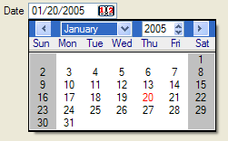
DATEEDIT item-tag = field-name [ , attribute-list ]
;
CENTURY, COLOR, COLOR WHERE, COMMENT, DEFAULT, FONTPITCH, FORMAT, HIDDEN, INCLUDE, JUSTIFY, KEY, NOT NULL, NOENTRY, REQUIRED, SAMPLE, SIZEPOLICY, STYLE, TAG, TABINDEX, VALIDATE LIKE.
Table Column only: UNSORTABLE, UNSIZABLE, UNHIDABLE, UNMOVABLE, TITLE.
01 DATEEDIT f001 = order.shipdate;This item type defines a line-edit with a button on the right that opens a calendar, dedicated to DATE input.
When you use an HBox tag combined with the
SAMPLE
attribute, it is possible to specify the exact wdith of a DATEEDIT.
By default, the real width is computed as width=nbchars-2 when nbchars>2.
For more details about HBox tag and width computing rules, see BUTTONEDIT.
Some front-ends support different presentation options which can be controlled by a style attribute. You can for example change the first day of the week, or the icon of the button.
See also Form Field.
The COMBOBOX item type defines a line-edit with a drop-down list of values.
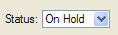
COMBOBOX item-tag = field-name [ , attribute-list ]
;
COLOR, COLOR WHERE, COMMENT, DEFAULT, DOWNSHIFT, FONTPITCH, HIDDEN, KEY, INCLUDE, INITIALIZER, ITEMS, JUSTIFY, NOT NULL, NOENTRY, QUERYEDITABLE, REQUIRED, SAMPLE, SCROLL, SIZEPOLICY, STYLE, UPSHIFT, TAG, TABINDEX, VALIDATE LIKE.
Table Column only: UNSORTABLE, UNSIZABLE, UNHIDABLE, UNMOVABLE, TITLE.
01COMBOBOX f001 = customer.city, ITEMS=((1,"Paris"),(2,"Madrid"),(3,"London"));02COMBOBOX f002 = customer.sector, REQUIRED, ITEMS=("SA","SB","SC");03COMBOBOX f003 = customer.state, NOT NULL, INITIALIZER=myinit;
This item type defines a line-edit with a button on the right side that opens a drop-down list.
The values of the drop-down list are defined by the ITEMS
attribute. You can define a simple list of values like
("A","B","C","D", ... ) or
you can define a list of key/label combinations like in ((1,"Paris"),(2,"Madrid"),(3,"London")).
In the second case, the labels (i.e. the city names) will be displayed according
to the key value (the city number) hold by the field.
The INITIALIZER attribute allows you to define an initialization function for the COMBOBOX. This function will be invoked at runtime when the form is loaded, to fill the item list dynamically with database records, for example. It is recommended that you use the TAG attribute, so you can identify in the program the kind of COMBOBOX Form Item to be initialized. Note that the initialization function name if converted to lowercase by fglform.
If neither ITEMS nor INITIALIZER attributes are specified, the form compiler automatically fills the list of items with the values of the INCLUDE attribute, when specified. However, the item list will not automatically be populated with include range values (i.e. values defined using the TO keyword). The INCLUDE attribute can be specified directly in the form or indirectly in the schema files.
During an INPUT, a COMBOBOX field value can only be one of the values specified in the ITEMS attribute. During an CONSTRUCT, a COMBOBOX field gets an additional 'empty' item (even if the field is NOT NULL), to let the user clear the search condition.
If one of the items is explicitly defined with NULL and the NOT NULL attribute is omitted; In INPUT, selecting the corresponding combobox list item sets the field value to null. In CONSTRUCT, selecting the list item corresponding to null will be equivalent to the = query operator, which will generate a "colname is null" SQL condition.
During a CONSTRUCT, a COMBOBOX is not editable
by default: The end-user is forced to set one of
the values of the list as defined by the ITEMS
attribute, or set the 'empty' item. The QUERYEDITABLE attribute can be
used to force the COMBOBOX to be editable during a CONSTRUCT
instruction, in
order to allow free search criterion input such as "A*".
If QUERYEDITABLE is used and the ITEMS are defined with
key/label combinations, the text entered by the user will be automatically
searched in the list of items. If a label corresponds, the key will be used in
the SQL criterion, otherwise the text entered by the user will be used. For example, if the items are defined as ((1,"Paris"),(2,"Madrid"),(3,"London")),
and the user enters "Paris" in the field, the item (1,"Paris")
will match and will be generate "colname = 1". If the user enters ">2",
the text does not match any item so it will be used as is and generate the SQL "colname > 2".
Users may enter values like "Par*", but in this case the runtime system will raise an
error because this criterion does is not valid for the numeric data type of the field.
To avoid end-user confusion, a COMBOBOX defined with key/label
combinations should not use the QUERYEDITABLE attribute.
When using an HBox tag combined with the
SAMPLE
attribute, it is possible to specify the exact width of a COMBOBOX.
By default, the real width is computed as width=nbchars-2 when nbchars>2.
For more details about HBox tag and width computing rules, see BUTTONEDIT.
Some front-ends support different presentation options which can be controlled by a style attribute. You can for example enable the first item to be selected when pressing keys.
See also Form Field.
The CHECKBOX item type defines a boolean checkbox field.
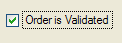
CHECKBOX item-tag = field-name [ , attribute-list ]
;
COLOR, COLOR WHERE, COMMENT, DEFAULT, FONTPITCH, HIDDEN, INCLUDE, JUSTIFY, KEY, NOT NULL, NOENTRY, REQUIRED, SAMPLE, SIZEPOLICY, STYLE, TAG, TABINDEX, TEXT, VALIDATE LIKE, VALUECHECKED, VALUEUNCHECKED.
Table Column only: UNSORTABLE, UNSIZABLE, UNHIDABLE, UNMOVABLE, TITLE.
01 CHECKBOX f001 = customer.active, REQUIRED, TEXT="Active", VALUECHECKED="Y", VALUEUNCHECKED="N";The CHECKBOX item type defines a boolean entry with a box and a text label.
The TEXT attribute defines the label to be displayed near the check box.
The box shows a checkmark when the form field contains the value
defined in the VALUECHECKED attribute (for example:
"Y"), and shows no checkmark
if the field value is equal
to the
value defined by the VALUEUNCHECKED
attribute (for example: "N"). If you do not specify the VALUECHECKED or VALUEUNCHECKED
attributes, they respectively default to TRUE (integer 1) and FALSE
(integer 0).
By default, during an INPUT, a CHECKBOX field can have three states:
If the field is declared as NOT NULL, the initial state can be grayed if the default value is NULL; once the user has changed the state of the CHECKBOX field, it switches only between Checked and Unchecked states.
During an CONSTRUCT, a CHECKBOX field always has three possible states (even if the field is NOT NULL), to let the user clear the search condition:
See also Form Field.
The RADIOGROUP item type defines a set of radio buttons.
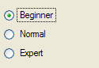
RADIOGROUP item-tag = field-name [ , attribute-list ]
;
COLOR, COLOR WHERE, COMMENT, DEFAULT, FONTPITCH, HIDDEN, INCLUDE, ITEMS, JUSTIFY, KEY, NOT NULL, NOENTRY, ORIENTATION, REQUIRED, SAMPLE, SIZEPOLICY, STYLE, TAG, TABINDEX, VALIDATE LIKE.
Table Column only: UNSORTABLE, UNSIZABLE, UNHIDABLE, UNMOVABLE, TITLE.
01 RADIOGROUP f001 = player.level, ITEMS=((1,"Beginner"),(2,"Normal"),(3,"Expert"));The text associated with each value will be used as the label of the corresponding radio button, for example:
((1,"Beginner"),(2,"Normal"),(3,"Expert"))
If the ITEMS attribute is not specified, the form compiler automatically fills the list of items with the values of the INCLUDE attribute, when specified. However, the item list will not automatically be populated with include range values (i.e. values defined using the TO keyword). The INCLUDE attribute can be specified directly in the form or indirectly in the schema files.
During an INPUT, a RADIOGROUP field value can only be one of the values specified in the ITEMS attribute. During an CONSTRUCT, a RADIOGROUP field allows to uncheck all items (even if the field is NOT NULL), to let the user clear the search condition.
If one of the items is explicitly defined with NULL and the NOT NULL attribute is omitted; In INPUT, selecting the corresponding radio button sets the field value to null. In CONSTRUCT, selecting the radio button corresponding to null will be equivalent to the = query operator, which will generate a "colname is null" SQL condition.
Use the ORIENTATION attribute to define if the radio group must be displayed vertically or horizontally.
Some front-ends support different presentation options which can be controlled by a style attribute. You can for example define what item has to be selected firsts when pressing keys.
See also Form Field.
The LABEL item type defines a simple text area to display a read-only value.
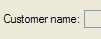
LABEL item-tag = field-name [ , attribute-list ]
;
LABEL item-tag : item-name [ , attribute-list ]
;
COLOR, COLOR WHERE, COMMENT, FONTPITCH, HIDDEN, IMAGECOLUMN, JUSTIFY, REVERSE, SAMPLE, SIZEPOLICY, STYLE, TAG.
Form Field Label only: FORMAT, SAMPLE.
Static Label only: TEXT.
Table Column only: UNSORTABLE, UNSIZABLE, UNHIDABLE, UNMOVABLE, TITLE.
01LABEL f001 = vehicle.description; -- This is a form field label02LABEL lab1 : label1, TEXT="Hello"; -- This is a static label
This item type can be used to define a read-only text area as a form field or as a static label.
Some front-ends support different presentation options which can be controlled by a style attribute. You can for example change the text format to render HTML content.
Form Field Label
This type of label item must be used to display values that change often during program execution, like database information. The text of the label is defined by the value of the corresponding form field. The text can be changed from the BDL program by using the DISPLAY TO instruction to set the value of the field, or within a list by using a DISPLAY ARRAY. This kind of Form Item does not allow data entry; it is only used to display values.
See also Form Field for more details.
Static Label
This type of label item must be used to display text that does not change often, like field descriptions. The text of the label is defined by the TEXT attribute; the item is not a form field. The text can be changed from the BDL program by using the API provided to manipulate the user interface (see Dynamic User Interface for more details). It is not possible to change the text with a DISPLAY TO instruction. This kind of item is not affected by instructions such as CLEAR FORM. Static labels display only character text values, and therefore do not follow any justification rule as form field labels.
The IMAGE item type defines an area that can display an image from a pixel-map file.
IMAGE item-tag = field-name [ , attribute-list ]
;
IMAGE item-tag : item-name [ , attribute-list ]
;
AUTOSCALE, COMMENT, HEIGHT, HIDDEN, STYLE, STRETCH, TAG, WIDTH.
Static Image only: IMAGE.
Image Field only: COLOR, COLOR WHERE, FONTPITCH, JUSTIFY, SIZEPOLICY, SAMPLE.
Table Column only: UNSORTABLE, UNSIZABLE, UNHIDABLE, UNMOVABLE, TITLE.
01IMAGE f001 = cars.picture, HEIGHT=300 PIXELS, WIDTH=400 PIXELS, STRETCH=BOTH;02IMAGE img1 : logo, IMAGE="fourjs.gif", STRETCH=BOTH;
The IMAGE item type defines an area where a picture file can be displayed. An IMAGE form item can be defined as a form field or as a static image.
The STRETCH attribute can be used to define how the image widget size must change when the parent container is resized. Values can be NONE, X, Y or BOTH. Default value is NONE for IMAGE fields.
The AUTOSCALE attribute can be set to indicate if the image must be scaled to the available space defined by the width and height of the form item. If you do not specify AUTOSCALE, the image widget will get scrollbars if the picture size is larger as the image widget size.
You can define the size of an image widget by using the WIDTH and HEIGHT attributes, but this will only have an effect if the SIZEPOLICY attribute is set to FIXED. If the WIDTH/HEIGHT attributes are not used, the size of the image widget defaults to the relative width and height defined by the item-tag in the form layout section. Note that the size specified by WIDTH and HEIGHT defines the size of the image widget. On some platforms, the image widgets automatically add a border to the source picture. Therefore, to avoid automatic scrollbars, you might need to increase the size of the image form item if a border is used. For example, if your image source has a size of 500x500 pixels and the widget displays a border with as size of 1 pixel, you will have to set WIDTH and HEIGHT to 502 pixels, otherwise either scrollbars will appear, or the image will shrink if AUTOSCALE is used. Alternatively, you can avoid the image border with a presentation style attribute.
The SIZEPOLICY attribute is used to control how the size of the image widget is set:
| Widget Size | Picture Size | SIZEPOLICY | AUTOSCALE |
| Size of Form Specification File | Size of Widget (image may shrink or grow) | INITIAL, FIXED, DYNAMIC | TRUE (Attribute is set) |
| Size of Form Specification File | Original Size (Scrollbars may appear) | FIXED | FALSE (Attribute is not set) |
| Size of Picture (widget can grow) | Original Size | INITIAL, DYNAMIC | FALSE (Attribute is not set) |
This type of image item must be used to display values that change often during program execution, for example if the image is stored in the database. The picture resource is defined by the value of the field. This value can be changed from the BDL program by using the DISPLAY BY NAME / DISPLAY TO instruction or just by changing the value of the program variable bound to the image field, when using the UNBUFFERED mode in an interactive instruction.
When using a string variable containing a file name or file path, the values of an IMAGE field defining the picture resource follow the same rules as the IMAGE attribute of static images (see also FGLIMAGEPATH). However, images displayed by program to image fields are considered as valid files to be transferred to the clients without risk and do not follow the FGLIMAGEPATH security restrictions. Images are searched according to the path list defined in FGLIMAGEPATH.
When located in a file, the content of a BYTE variable can be automatically displayed to an IMAGE in field, by using DISPLAY BY NAME / DISPLAY TO or when the BYTE variable is controlled by a dialog instruction.
See also Form Field.
This type of image item must be used to display an image that does not change often, such as background pictures or logos. The resource of the image is defined by the IMAGE attribute; the item is not a form field: This kind of item is not affected by instructions such as CLEAR FORM or the DISPLAY TO instruction. The image resource can be changed from the BDL program by using the API provided to manipulate the user interface (see Dynamic User Interface for more details). For more details about supported image resources, read the section dedicated to the IMAGE attribute (see also FGLIMAGEPATH).
The PROGRESSBAR item type defines a horizontal bar with a progress indicator.
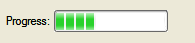
PROGRESSBAR item-tag = field-name [ , attribute-list ]
;
COLOR, COLOR WHERE, COMMENT, FONTPITCH, HIDDEN, JUSTIFY, VALUEMIN, VALUEMAX, SAMPLE, SIZEPOLICY, STYLE, TAG.
Table Column only: UNSORTABLE, UNSIZABLE, UNHIDABLE, UNMOVABLE, TITLE.
01 PROGRESSBAR f001 = workstate.position, VALUEMIN=-100, VALUEMAX=+100;This item type can be used to show progress information.
The position of the progress bar is defined by the value of the corresponding form field. The value can be changed from the BDL program by using the DISPLAY TO instruction to set the value of the field. This kind of Form Item does not allow data entry; it is only used to display integer values.
The VALUEMIN and VALUEMAX attributes define respectively the lower and upper integer limit of the progress information. Any value outside this range will not be displayed. Default values are VALUEMIN=0 and VALUEMAX=100.
Some front-ends support different presentation options which can be controlled by a style attribute. You can for example define of a percentage must be displayed.
See also Form Field.
The SLIDER item type defines a horizontal or vertical slider.
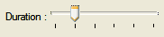
SLIDER item-tag = field-name [ , attribute-list ]
;
COLOR, COLOR WHERE, COMMENT, DEFAULT, FONTPITCH, HIDDEN, INCLUDE, JUSTIFY, ORIENTATION, SAMPLE, SIZEPOLICY, STEP, STYLE, TABINDEX, TAG, VALIDATE LIKE, VALUEMIN, VALUEMAX.
Table Column only: UNSORTABLE, UNSIZABLE, UNHIDABLE, UNMOVABLE, TITLE.
01 SLIDER f001 = workstate.duration, VALUEMIN=0, VALUEMAX=5, STEP=1;This item type defines a classic widget for controlling a bounded value. It lets the user move a slider along a horizontal or vertical groove and translates the slider's position into a value within the legal range.
The VALUEMIN and VALUEMAX attributes define respectively the lower and upper integer limit of the slider information. Any value outside this range will not be displayed; the step between two marks is defined by the STEP attribute. The ORIENTATION attribute defines whether the SLIDER is displayed vertically or horizontally. If VALUEMIN and/or VALUEMAX are not specified, they default respectively to 0 (zero) and 5.
See also Form Field.
The SPINEDIT item type defines a spin box widget (spin button).
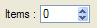
SPINEDIT item-tag = field-name [ , attribute-list ]
;
COLOR, COLOR WHERE, COMMENT, DEFAULT, FONTPITCH, HIDDEN, INCLUDE, JUSTIFY, NOT NULL, NOENTRY, REQUIRED, SAMPLE, SIZEPOLICY, STEP, STYLE, TABINDEX, TAG, VALIDATE LIKE, VALUEMIN, VALUEMAX.
Table Column only: UNSORTABLE, UNSIZABLE, UNHIDABLE, UNMOVABLE, TITLE.
01 SPINEDIT f001 = command.nbItems, STEP=5;This item type allows the user to choose a value either by clicking the up/down buttons to increase/decrease the value currently displayed, or by typing the value directly into the spin box.
The step between two values is defined by the STEP attribute.
The VALUEMIN and VALUEMAX
attributes define respectively the lower and upper integer limit of the
spin-edit range.
Default values
are VALUEMIN=0 and VALUEMAX=100.
See also Form Field.
The TIMEEDIT item type defines a time editor widget.
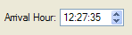
TIMEEDIT item-tag = field-name [ , attribute-list ]
;
COLOR, COLOR WHERE, COMMENT, DEFAULT, FONTPITCH, HIDDEN, INCLUDE, JUSTIFY, NOT NULL, NOENTRY, REQUIRED, SAMPLE, SIZEPOLICY, STYLE, TABINDEX, TAG, VALIDATE LIKE.
Table Column only: UNSORTABLE, UNSIZABLE, UNHIDABLE, UNMOVABLE, TITLE.
01 TIMEEDIT f001 = pakcage.arrTime;This item type allows the user to edit times by using the keyboard or the arrow keys to increase/decrease time values.
See also Form Field.
The WEBCOMPONENT item type defines a generic form field that can receive an external widget.
WEBCOMPONENT item-tag = field-name [ , attribute-list ]
;
COLOR, COLOR WHERE, COMPONENTTYPE, COMMENT, DEFAULT, FONTPITCH, HEIGHT, HIDDEN, INCLUDE, JUSTIFY, NOT NULL, NOENTRY, PROPERTIES, REQUIRED, SCROLLBARS, SIZEPOLICY, STYLE, STRETCH, TAG, TABINDEX, VALIDATE LIKE, WIDTH.
Table Column only: UNSORTABLE, UNSIZABLE, UNHIDABLE, UNMOVABLE, TITLE.
The WEBCOMPONENT item type defines a form field which can be implemented with a plug-in mechanism on the front-end side.
You must define the type of the widget with the COMPONENTTYPE attribute. This attribute is mandatory to identify the external widget that will be used for this field.
The SCROLLBARS and STRETCH attributes can be used to define the behavior of the widget regarding sizing.
The PROPERTIES attribute is typically used to define attributes that are specific to a given WEB Component. For example, a chart component might have properties to define x-axis and y-axis labels.
The value of a WEBCOMPONENT field is usually (XML) formatted, and holds the data that will be rendered by the external widget through the JavaScript shell.
See also Using Web Components.
01 WEBCOMPONENT f001 = FORMONLY.mycal, COMPONENTTYPE="Calendar", STRETCH=BOTH, STYLE="regular";The BUTTON item type defines a push-button that can trigger an action.
BUTTON item-tag : item-name [ , attribute-list ]
;
COMMENT, FONTPITCH, HIDDEN, IMAGE, SAMPLE, SIZEPOLICY, STYLE, TABINDEX, TAG, TEXT.
01 BUTTON btn1 : print, TEXT="Print Report", IMAGE="printer";This item type defines a standard push button with a label or a picture.
In the BUTTON Form Item, the label is defined with the TEXT attribute, the picture is defined by the IMAGE attribute, and the COMMENT attribute can be used to define a help bubble for the button.
When controlled by a COMMAND action handler in a DIALOG interactive instruction, form buttons can get the focus and thus be part of the tabbing list (TABINDEX). For more details see tabbing order handling in Multiple Dialogs.
The CANVAS item type defines an area in which you can draw shapes.
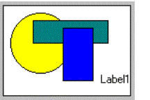
CANVAS item-tag : item-name
[ , attribute-list ] ;
01 CANVAS cvs1 : canvas1;See Canvas for more details.
The GROUP item type defines attributes for a groupbox layout tag.
GROUP layout-tag : item-name
[ , attribute-list ] ;
COMMENT, FONTPITCH, GRIDCHILDRENINPARENT, HIDDEN, STYLE, TAG, TEXT.
01 GROUP g1 : group1, TEXT="Description", GRIDCHILDRENINPARENT;Use this item type to specify the attributes of a GROUP container defined with a layout tag.
The SCROLLGRID item type defines attributes for a scrollgrid layout tag.
SCROLLGRID layout-tag : item-name
[ , attribute-list ] ;
COMMENT, FONTPITCH, GRIDCHILDRENINPARENT, HIDDEN, STYLE, TAG.
01 SCROLLGRID sg1 : scrollgrid1, GRIDCHILDRENINPARENT;Use this item type to specify the attributes of a SCROLLGRID container defined with a layout tag.
The TABLE item type defines attributes for a table layout tag.
TABLE layout-tag : item-name
[ , attribute-list ] ;
COMMENT, DOUBLECLICK, FONTPITCH, HEIGHT, HIDDEN, STYLE, TAG, UNHIDABLECOLUMNS, UNMOVABLECOLUMNS, UNSIZABLECOLUMNS, UNSORTABLECOLUMNS, WANTFIXEDPAGESIZE, WIDTH.
01 TABLE t1 : table1, UNSORTABLECOLUMNS;Use this item type to specify the attributes of a TABLE defined with a layout tag.
With the DOUBLECLICK attribute, you can define a particular action to be send when the user double-clicks on a row.
By default, a table allow to hide, move, resize columns and sort the list when the user clicks on a column header. The UNHIDABLECOLUMNS, UNMOVABLECOLUMNS, UNSIZABLECOLUMNS, UNSORTABLECOLUMNS attributes can be used to deny these features.
The WIDTH and HEIGHT attributes can be used to specify a initial geometry for the table.
By default, tables can be resized in height. Use the WANTFIXEDPAGESIZE attribute to deny table resizing.
The TREE item type defines attributes for a tree layout tag.
TREE layout-tag : item-name
[ , attribute-list ] ;
COMMENT, DOUBLECLICK, HIDDEN, FONTPITCH, STYLE, TAG, UNHIDABLECOLUMNS, UNMOVABLECOLUMNS, UNSIZABLECOLUMNS, UNSORTABLECOLUMNS, WANTFIXEDPAGESIZE, WIDTH, HEIGHT, PARENTIDCOLUMN, IDCOLUMN, EXPANDEDCOLUMN, ISNODECOLUMN, IMAGEEXPANDED, IMAGECOLLAPSED, IMAGELEAF.
The tree layout tag defines a tree region in the frame of a grid-based container, providing the same presentation as a TREE container. See the Tree Container discussion for specific information about the mandatory and optional columns in a tree view. See also the Tree View page for more details about tree-view programming in Genero.
The INSTRUCTIONS section can specify screen arrays, non-default screen records and field delimiters.
INSTRUCTIONS
{ screen-record | screen-array
} [;]
[...]
[ delimiters [;] ]
[ DEFAULT SAMPLE = "string" ]
[END]where screen-record is:
SCREEN RECORD record-name ( field-list )
where screen-array is:
SCREEN RECORD array-name [ size ] ( field-list
)
where field-list is:
{ table.* | field [ {THROUGH|THRU}
lastfield ] [,...] }
and where delimiters is:
DELIMITERS "AB" TUI Only!
01...02INSTRUCTIONS03SCREEN RECORD s_items[10]04( stock.*,05items.quantity,06FORMONLY.total_price )07DELIMITERS "[]"08END
The DEFAULT SAMPLE directive defines the default sample text for all fields. See the SAMPLE attribute for more details:
01 DEFAULT SAMPLE = "MMM"A screen record is a group of fields that screen interaction statements of the program can reference as a single object. By establishing a correspondence between a set of screen fields (the screen record) and a set of program variables (typically a program record), you can pass values between the program and the fields of the screen record. In many applications, it is convenient to define a screen record that corresponds to a row of a database table.
The form compiler builds default screen records that consist of all the screen fields linked to the same database table within a given form. A default record is automatically created for each table that is used to reference a field in the ATTRIBUTES section. The components of the default record correspond to the set of display fields that are linked to columns in that table. The name of the default screen record is the table name (or the alias, if you have declared an alias for that table in the TABLES section). For example, all the fields linked to columns of the customer table constitute a default screen record whose name is customer. If a form includes one or more FORMONLY fields, those fields constitute a default screen record called formonly.
Like the name of a screen field, the identifier of a screen record must be unique within the form, and it has a scope that is restricted to when its form is open. Statements can reference record only when the screen form that includes it is being displayed. The form compiler returns an error if record is the same as the name or alias of a table in the TABLES section.
In the INSTRUCTIONS section of a form specification file, you can declare explicit screen records by using the SCREEN RECORD keywords to declare a name for the screen record and to specify a list of fields that are members of the screen record.
A screen array is usually a repetitive array of fields in the screen layout, each containing identical groups of screen fields. Each row of a screen array is a screen record. Each column of a screen array consists of fields with the same field tag in the LAYOUT section of the form specification file.
You must declare screen arrays in the INSTRUCTIONS section with the SCREEN RECORD keyword, as in the declaration of a screen record, but with an additional parameter to specify the number of screen records in the array.
The size value should be the number of lines in the logical form where the set of fields that comprise each screen record is repeated within the screen array. For example, a GRID container of the LAYOUT section might represent a screen array like this:
01...02LAYOUT03GRID04{05OrdId Date Total Price06[f001 |f002 |f003 ]07[f001 |f002 |f003 ]08[f001 |f002 |f003 ]09[f001 |f002 |f003 ]10}11END12END13...
This example requires a size of [4]. Except for the size parameter, the syntax for specifying the identifier and the field names of a screen array is the same as for a simple screen record.
You can reference the names of the screen array in the DISPLAY TO, DISPLAY ARRAY, INPUT and INPUT ARRAY statements of programs, but only when the screen form that includes the screen array is the current form.
Screen records and screen arrays can display program records. If the fields in the screen record have the same sequence of data types as the columns in a database table, you can use the screen record to simplify operations that pass values between program variables and rows of the database.
When using the TUI mode, you can change the field delimiters displayed on the screen. By default, field delimiters are simple brackets ( [ ] ) and can be changed to any other printable character, including blank spaces. The DELIMITERS instruction tells the form compiler what symbols to use as field delimiters when the runtime system displays the form on the screen. The opening and closing delimiter marks must be enclosed within quotation marks ( " ).
To use only one space between fields, in the LAYOUT section, substitute a pipe symbol ( | ) for paired back-to-back ( ][ ) brackets that separate adjacent fields. In the INSTRUCTIONS section, define some symbol as both the beginning and the ending delimiter. For example, you could specify "| |" or "/ /" or ": :" or " " (blanks).
Field delimiters are not displayed when using the GUI mode.
The KEYS section can be used to define default key labels for the current form.
KEYS
key-name = [%]"label"
[...]
[END]
01...02KEYS03F10 = "City list"04F11 = "State list"05F15 = "Validate"06END
For more details, see "Setting Key Labels".
This section describes the syntax supported for Boolean expressions in form specification files, as in the COLOR WHERE attribute specification, for example.
[(] boolexpr {AND|OR} boolexpr
[)] [...]
where boolexpr is:
[NOT]
{ expression
{ =
| <>
| <=
| >=
| <
| >
| !=
| IS [NOT] NULL
| [NOT] BETWEEN expression
AND expression
}
| charexpr
{ [NOT] MATCHES "string"
| [NOT] LIKE "string"
}
}
In order for your program to work with a screen form, you must create a form specification file that conforms to the syntax described earlier in this section, and then compile the form. You must use the form compiler to do the compilation. Form compilation requires that the database schema files already exist if the form specification file uses a SCHEMA specification.
To work with a screen form, the application requires a form driver, which is a logical set of interactive statements that control the display of the form, bind form fields to program variables, and respond to actions by the user in fields.
Compiled forms must be loaded by the program with the OPEN FORM or the OPEN WINDOW WITH FORM instruction.
Once a form is loaded, the program can manipulate forms to display or let the user edit data, with instructions like DISPLAY TO, INPUT, INPUT ARRAY, DISPLAY ARRAY and CONSTRUCT. Program variables are used as display and/or input buffers.